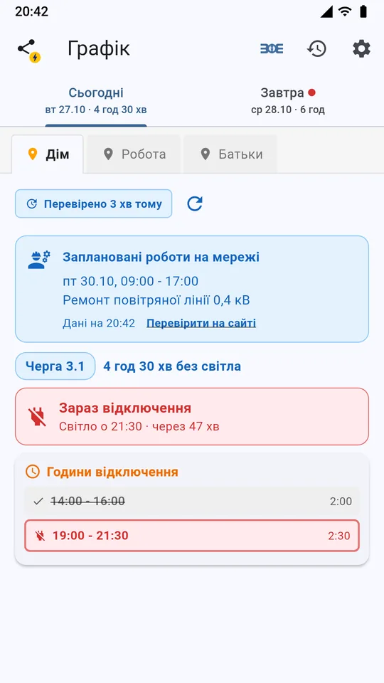
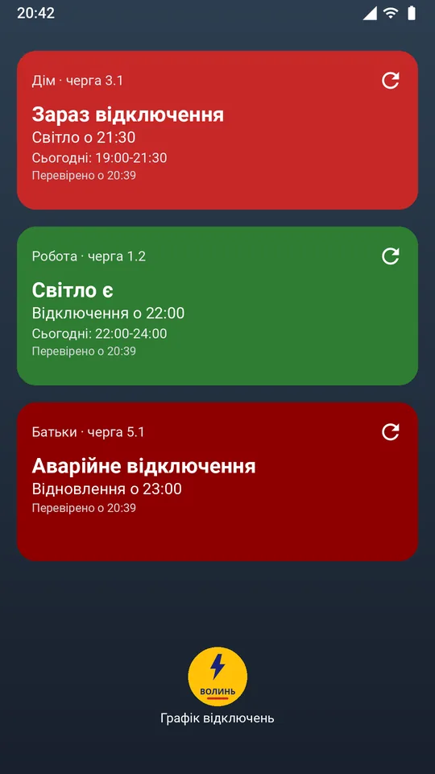
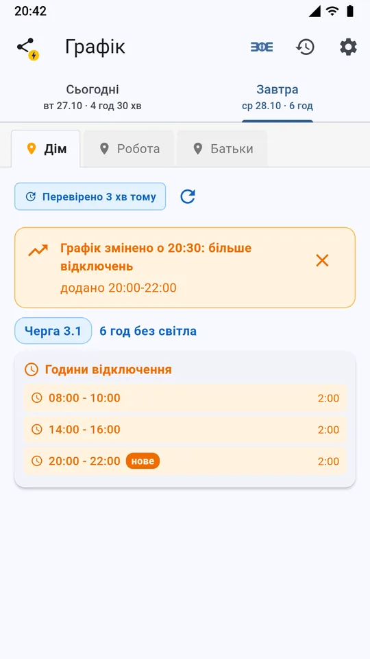
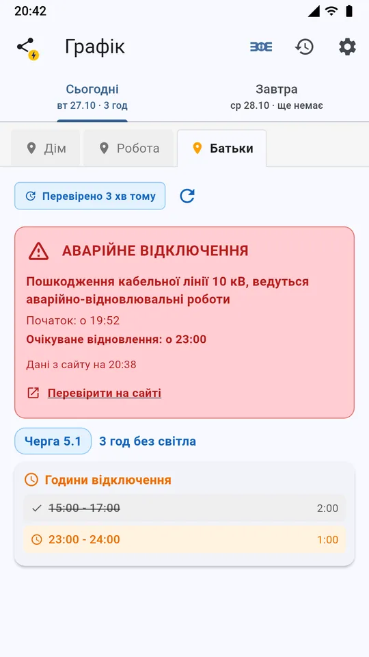
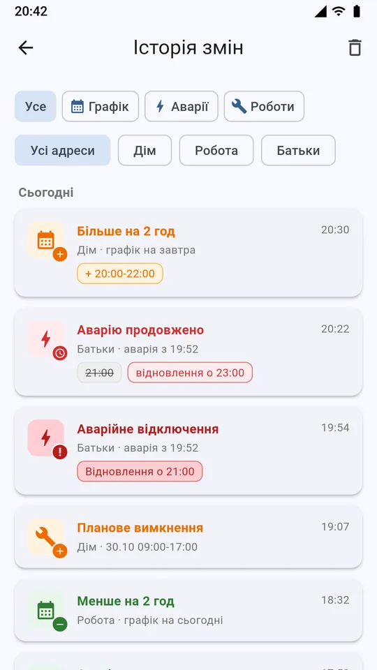

Що вміє застосунок
Чи є світло просто зараз
"Світло є", "Скоро відключення" чи "Зараз відключення" з відліком часу до відключення або повернення світла.
Сповіщення про зміни графіка
Щойно графік на сьогодні чи завтра змінився, а також перед відключенням і перед поверненням світла.
Аварійні відключення
Коли почалась аварія, на коли обіцяють відновлення, чи його перенесли, і коли аварію усунено.
Планові роботи
Роботи на мережі за вашою адресою - заздалегідь, з датою й годинами.
Віджет на головний екран
Статус і наступне відключення без відкриття застосунку. Для кожної адреси - свій віджет.
До трьох адрес та історія
Дім, робота, батьки. Історія показує, що й коли змінилось у графіку, аваріях і роботах.
Як це виглядає





Для яких населених пунктів
Для будь-якої адреси, яку обслуговує Волиньобленерго: Луцьк, Ковель, Нововолинськ, Володимир, Ківерці, Рожище, Горохів, Любомль, Камінь-Каширський, Маневичі, Ратне, Шацьк, Турійськ, Берестечко та інші міста й села Волинської області.
Питання й відповіді
Як дізнатися свою чергу відключень?
Додайте адресу в застосунку: населений пункт, вулицю й номер будинку. Застосунок знайде вашу чергу (наприклад, 3.1) і покаже години відключень на сьогодні й завтра.
Звідки застосунок бере графіки відключень?
З офіційного сайту ПрАТ «Волиньобленерго» energy.volyn.ua: графіки погодинних відключень, аварійні та планові відключення. Там завжди можна перевірити актуальну інформацію.
Це офіційний застосунок Волиньобленерго?
Ні. Застосунок неофіційний і не пов'язаний з ПрАТ «Волиньобленерго». Він лише перевіряє їхній сайт і показує дані зручніше.
Як часто оновлюється графік?
У фоні застосунок перевіряє сайт раз на 15-60 хвилин (налаштовується) і надсилає сповіщення, якщо графік змінився. Тому зміни можуть з'являтися із затримкою.
Чому сповіщення можуть запізнюватися?
Деякі телефони (Xiaomi, Samsung, Huawei та інші) обмежують роботу застосунків у фоні. У налаштуваннях застосунку, у розділі "Сповіщення і фон", є перевірка дозволів і поради для різних телефонів.
Скільки це коштує?
Застосунок безкоштовний. У ньому є невеликий рекламний банер.